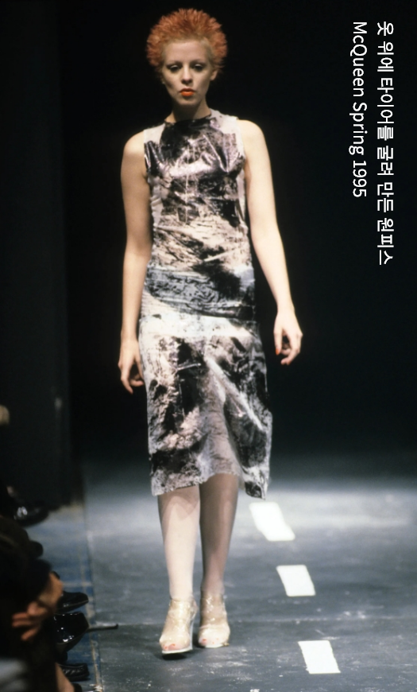
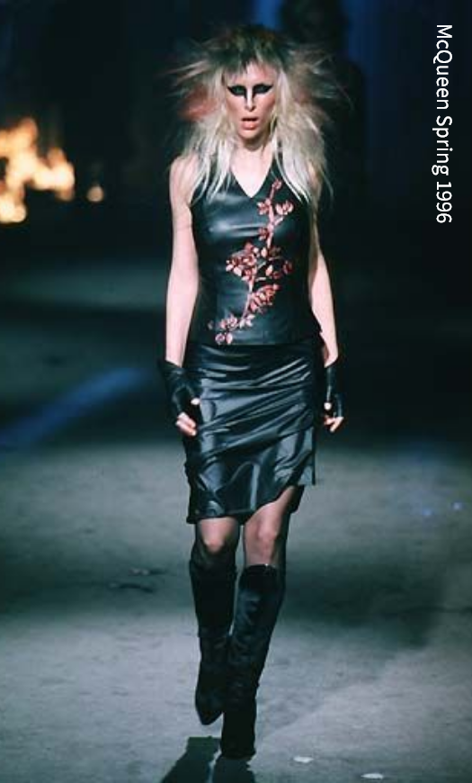
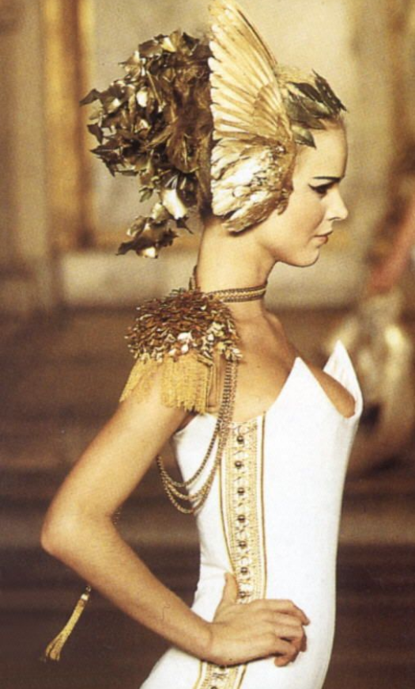
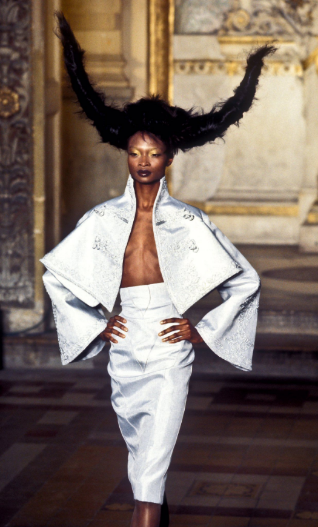
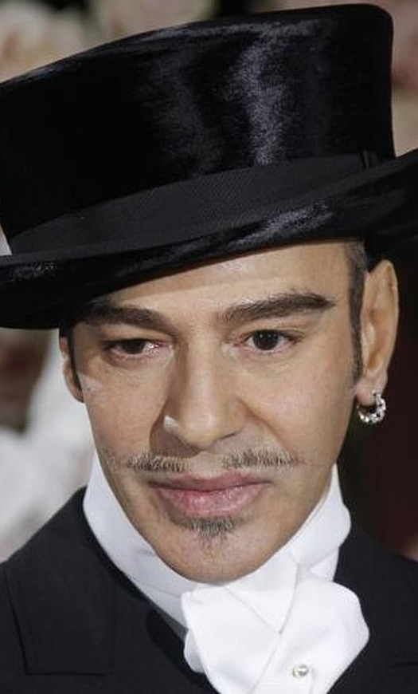
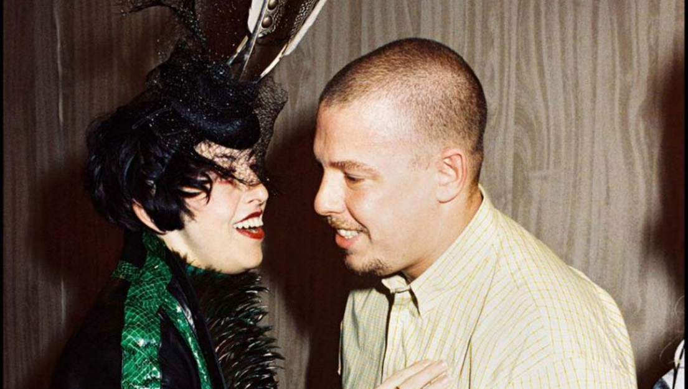
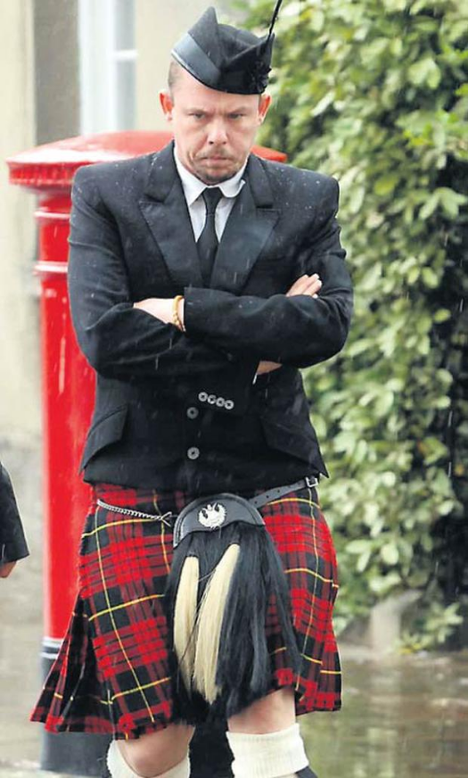

이후 McQueen은 자신의 이름을 건 패션쇼를 진행하기 시작한다. McQueen에게 이 패션쇼는 옷을 보여주는 쇼가 아닌 자신의 감정을 다른사람들에게 전달하는, 한편의 영화를 보는 듯한 패션를 만들어내고 싶었다. 옷들의 소재들도 비닐, 마스킹테이프 등 상식의 범주를 넘어선 것들이 주를 이루었다. 사람들의 반응은 충격적이었다. 쇼 중에 나가는 관객도 있었으며 패션에 대한 모독이라는 기사가 영국은 물론 유럽 전역의 패션지에 기제되었다.하지만 이것은Alexander McQueen의 이름을 알리는 홍보와 마케팅의 발판이 되었다.
1992년부터 자신의 컬렉션을 진행하면서 점차 그는 많은 인지도를 얻었으며 1996년 그는 올해의 영국 디자이너로 선정되었고, 이를 눈여겨 보던 LVMH의 회장인 Bernard Arnault은 그에게 지방시(Givenchy)의 수석 디자이너로 일해달라 요구하였고 McQueen은 결국 그 제안을 받아드려 Givenchy와 Alexander McQueen 두 브랜드를 동시에 운영하게 된다.


▲ Alexander McQueen이 처음으로 맡은 Givenchy 1996 S/S

John Galliano
dior 수석 디자이너 (1996 - 2011)
Marc Jacobs
Louis Vuitton 수석 디자이너 (1997~ 2013)
하지만 McQueen의 비극은 지방시에서 일을 시작한 이후로 시작된다. 그는 두 브랜드를 운영하며 너무나도 바쁜 인생을 보냈다. 또한 Givenchy에 있으면서 자신이 원하는 디자인을 마음대로 할 수 없었으며 Givenchy 임원들과도 잦은 마찰로 극심한 스트레스를 받았다. 더불어 'MARC JACOBS'와 'John Galliano'의 경우, LVMH 측에서 개인 브랜드에 대한 전폭적인 지원을 아끼지 않았지만, McQueen에게는 그러한 지원이 전무하기도 했다. 그의 인터뷰에 따르면 “나는 Givenchy에서 일한 것이 오직 돈을 위해서였다.”라는 말을 할 정도로 지방시에서의 생활을 고통스럽게 보낸다. 결국 McQueen은 자신의 브랜드 2001년 LVMH에 버금가는 이탈리아의 럭셔리 그룹 PPR(현 케링)에 자신의 브랜드를 매각하기에 이른다.

isabella blow와 McQueen ▲

2007년 마치 친남매와도 같았던 isabella blow가 자살로 생을 마감하고 3년 후 2010년 2월 11일, 어머니의 장례식이 열리기 하루 전에 그의 저택에서 목을 매어 자살했다. 향년 40세
◀ isabella blow의 장례식에서 슬픔에 빠져있는 McQueen